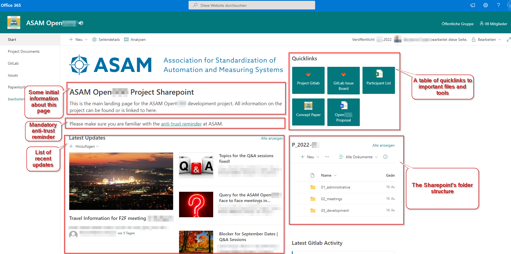

Project Sharepoint

Guide progress
Project landing page
Every project at ASAM has its own Microsoft Sharepoint.
Each Sharepoint’s start page acts as the main access webpage for the project team.
Each project may design their pages differently.
The following image shows an example.

Folder structure
Every project at ASAM has its own Microsoft Sharepoint that uses the same base folder structure.
It stores documents that are project related but not directly content for the project.
Sharepoint also serves as a project’s landing page (webpage) for the group where news are shared, FAQs are hosted, and important links and files can be found.
| You can use Sharepoint online or synch it locally. |
├───01_administrative................................// this is where all administrative topics are stored
│ ├───controlling..................................// contains all topics related to the controlling part of the project
│ ├───ASAM <Projectname> Participant_list.xlsx.....// contains all enrolled project members with their contact details and their Sub-group assignments
│ └───<Projectname> Proposal.<extension>...........// the project proposal as .docx or .pdf or .html
│
├───02_meetings......................................// contains folders with provided presentations and optional recordings of project meetings
│
└───03_development...................................// may be used to share and exchange supporting material and other external content not directly relevant to the standard itselfEach Sharepoint may also contain an archive containing information from previous project iterations.
What Sharepoint is used for
In ASAM projects, Sharepoint is used to exchange information in the team that is not a direct result or content of development. It consists of a landing page specific to the project and may be extended by the group as they see fit.
In addition to the landing page and its webpage features (such as FAQs), the main aspect of Sharepoint is its documents storage. Sharepoint can be used to exchange files not directly used as project content (e.g. background information, studies, floor plans for meetings etc.). It also contains the approved project proposal as well as the current participants list.
The Sharepoint also contains a current controlling overview for any involved external parties.
What Sharepoint is NOT used for
Any content directly relevant to the project’s deliverables (such as images to be used in a standard) are not to be organized through Sharepoint. Instead, such information has to be entered through the project’s repository so that is subjected to the same version control as all the other content. The same is true for meeting notes, which are to be taken as repository issues.
Participants list
Each Sharepoint contains a list of all participants in the related project. This list is set up initially based on the signups during the Proposal phase.
However, participation and assignments may change during development.
It is the responsibility of the Project Lead to keep this document up to date on at least a monthly basis.
They may delegate this task to another project member.
When you join a project, make sure that your contact information in the project’s participant list is present, correct, and up-to-date.